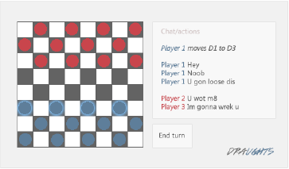

Dammen is een zeer populair en relatief eenvoudig bordspel dat door vele mensen gespeeld word. Het word gespeeld op een vierkant bord van 64 vakjes, waarbij iedere speler 12 stukken heeft die enkel diagonaal kunnen bewegen. De 'echte' versie van dammen is eenvoudig te leren en makkelijk te gebruiken en dus is het belangrijk dat een on-line versie dit ook is. Met dit in gedachten heb ik de volgende interface ontworpen:
Interacties met deze interface kunnen onderverdeeld worden in drie categorieën:
Een simpel overzicht van het spel, waarbij iedere gebruiker het veld in spiegelbeeld ziet voor een hogere 'consistency' met verdere matches. Een gebruik zou anders in de war kunnen raken als hij volgend spel een andere kleur speelt en opeens ondersteboven moet spelen.
Om een stuk te verplaatsen moet de gebruiker hier op klikken en het naar een veld van keuze slepen. Het veld zal vervolgens oplichten - een toegstane actie zal het veld groen kleuren, terwijl een niet mogelijke actie het veld rood doet kleuren en bij het loslaten van de muis het stuk naar zijn originele positie brengt.